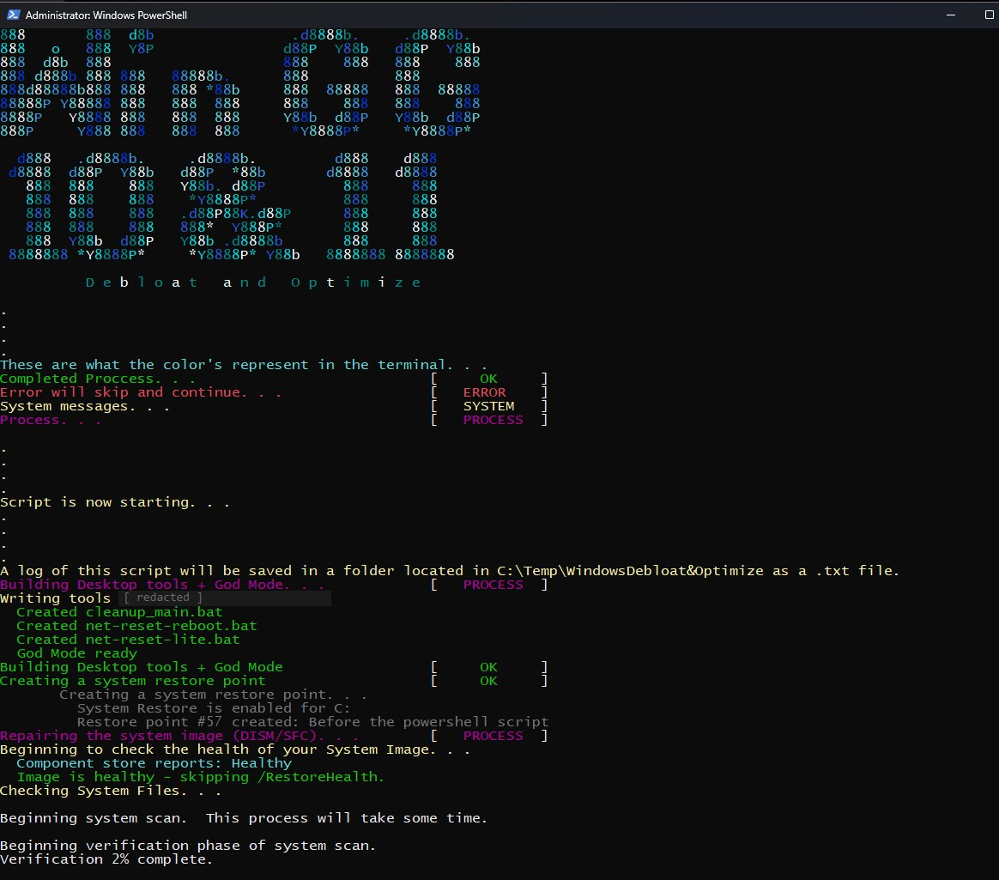

WindowsGG
Status: [ ACTIVE ]
PowerShell · Windows Internals · Security Hardening · Gaming Performance
A one-shot baselining script for a freshly installed Windows 10 or 11 gaming PC. It debloats, applies performance, privacy and security-hardening changes, and leaves the Utility Tools on the Desktop. The current generation of the Debloat & Optimize line, rebuilt from the ground up. Read more…